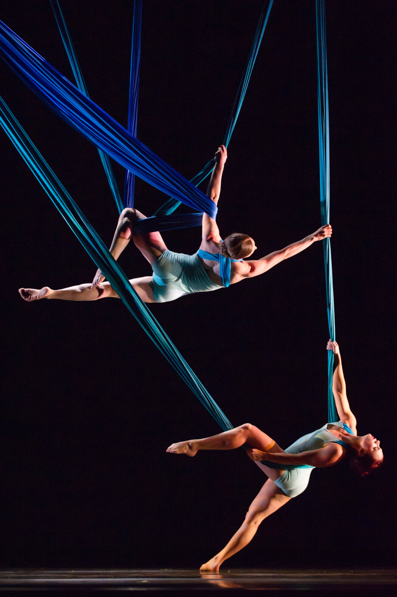
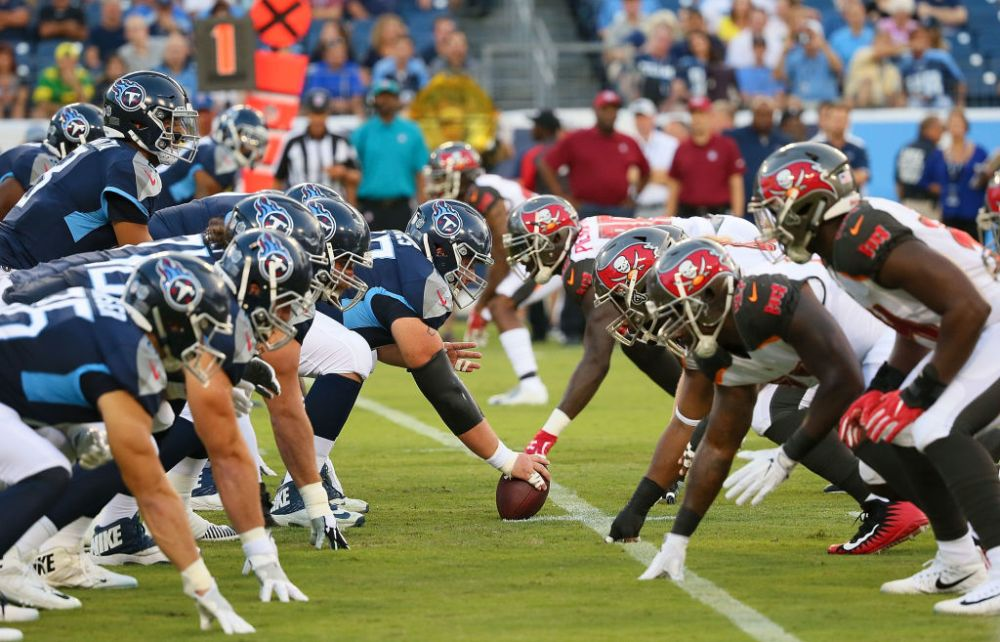
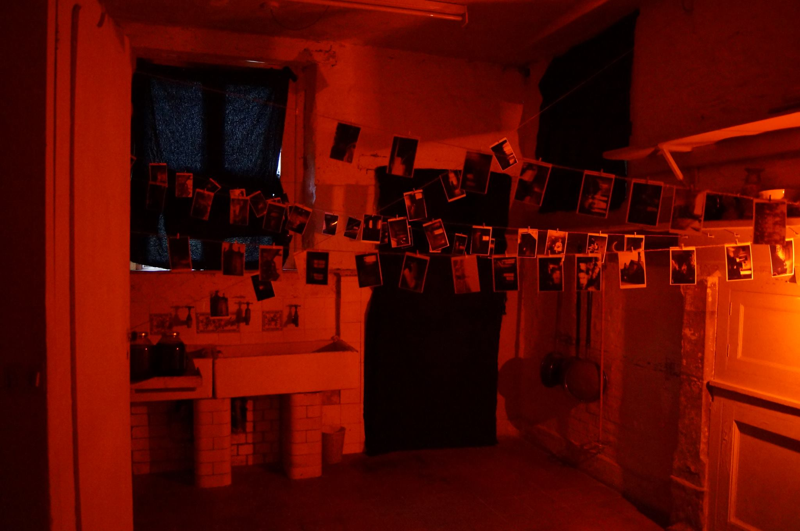
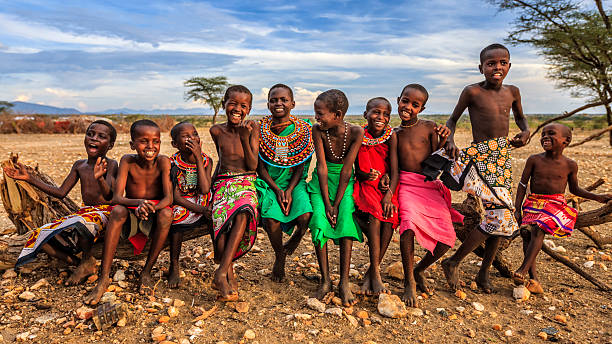
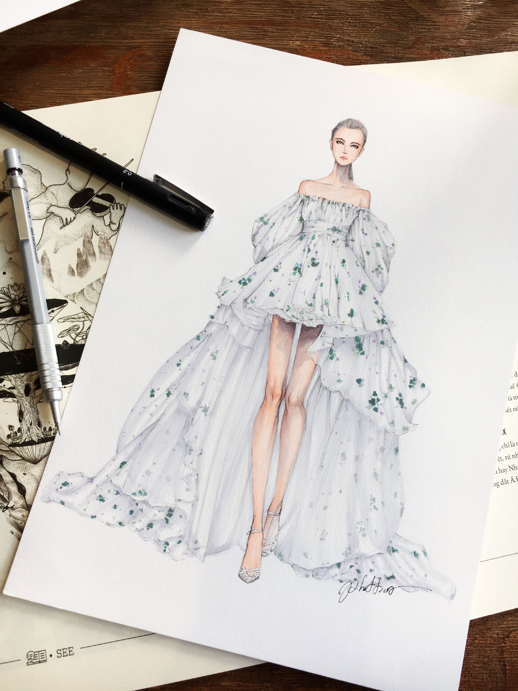

I am into historical fiction/dystopian fiction/science fiction/ and political fiction.
I love these genres because they convey or tell a imaginative /lively/ vivid story while relating in some way or form to real life .
I have read books like the chains, forge, fahrenheit 451,etc. (first two by laurie halse anderson last one by Ray Bradbury)
I love how these books just pull a reader into the story and help them to imagine situations of time.
.
.
I find true intrest in the art of these delicate but high demand in stength sports because they bring out an individuals inner beauty and shows who they are.
This sport allows women and men to express who they are in a different/ unique way and helps them to feel free.
This sport incorperates music physical movement and inner thought.
It requires love and conection to the flow of the music and like having this sticks out with me because you are making the dance apart of you.
You are becoming it.
.
I love almost all sports from football to soccer to kickball to volley ball you name it. I love when individuals come together through the same desire and build different skills such as leader ship and build trust in one another to carry the team. I love the sweat the tears the effort it takes to acheive an overall objective which is to win and be a good sport to prove yourself to your peers and yourself to just do your best and bring you to the table. i have participatwed in many sports and i love the rush the feel to be apart of something.
Fashion is something that i'd definately like to take up being able to buld and create my own pieces of art to coney my thoughts and figments of imagination into an article of clothing is just amazing.
Just like pole dancing and sports you get to convey an expresin and just show who you are and what you are aboun in a differnt way.
I have created various pieces of art work at marwen my art program mentioned in the Extracurricular page.
I have made sirts, vest, blankets, covers, etc,
.
.
.
I love photography because it allows humans to capture the simplest moments in life and hold on to them. photography allows a human to have a window in to the past occuring events. i have done dark room photagraphy and the whole developement of the individual photo is an art in its self. You have to develope the picture, burn it just the right amount to get as much detail, and use various filters to get high quality photos. Photography is special because people try to capture things that one may have not though to look twicwe at and things that are unique and communicates indviduality.
I love to see how various ethnic cultures use their religion, style, language, food,roots, etc. to form their cultural identity.
cultural identity comes in many different forms not only the ones listed above.
The identity of individal forms from ancestory as well and has deeper meaning.
It comes from who their grandparents and parents are and extendend family members.
It comes from the various moral and stroies passed down from generation to generation.
its how a group of people became a society of people.
.
.